도시계획기사 (2005-05-29 기출문제)
1과목: 도시계획론
1. 도시의 부양능력에 비해 지나치게 많은 인구가 집중하여 인구적으로만 비대해진 개발도상국의 도시화 현상으로 가장 적당한 것은?
- 가도시화(pseudo urbanization)
- 탈산업화(post-industrial)
- 개방도시(open-city)화
- 아노미(anomie)현상
(정답률: 알수없음)

2. 다음 중 도시계획사업을 통하여 설치하게 되는 도시계획 시설이 아닌 것은?
- 근린생활시설
- 교통시설
- 보건위생시설
- 방재시설
(정답률: 알수없음)
3. 다음 도시화에 대한 설명으로 적합하지 않은 것은?
- 어느 지역의 산업중에서 2, 3차 산업의 비중이 점차 증가해 간다.
- 일정지역에 인구집중 현상을 보여준다.
- 주변지역에 대한 영향력을 상실한다.
- 구조물과 토지이용에의 변화가 현저하다.
(정답률: 알수없음)
4. 한성(옛날의 서울)의 가로망계획에 대한 설명 중 가장 거리가 먼 것은?
- 일반적인 중국의 도시계획과 유사하게 계획 되었다.
- 자연지세를 활용하여 계획되었다.
- 막다른 골목과 우회로가 사용되었다.
- 주로 격자형의 가로망을 바탕으로 하였다.
(정답률: 알수없음)
5. 도시화정책의 결정방식 중에서 공공단체가 민간기업적 경영방식에 의거하여 개발사업을 할때 적용된다고 볼 수 있는 것은?
- 개선적문제해결식방식(ameliorative problem -solving)
- 배분적추세수정식방식(allocative trend - solving)
- 탐험적기회모색식방식(explorative opportunity - seeking)
- 규범적목표지향식방식(normative goal - orientation)
(정답률: 알수없음)
6. 시민의 오락, 휴식, 경관과 보전을 위하여 필요한 때 하천이나 호수, 사적지, 보호수림 또는 역사적, 문화적, 향토적 의의가 있는 장소에 설치하는 광장의 종류는?
- 주요시설광장
- 근린광장
- 경관광장
- 중심대광장
(정답률: 알수없음)
7. 다음 버게스(E. Burgess)의 동심원이론(concentric zone theory)에서 나타난 동심원의 구조로서 각 지대와 그림 A ‾ E가 순서대로 바르게 나열된 것은?
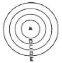
- CBD - 점이지대 - 근로자주택지대 - 중산층주택지대 - 통근자지대
- CBD - 근로자주택지대 - 전이지대 - 중산층주택지대 - 통근자지대
- CBD - 중산층주택지대 - 근로자주택지대 - 전이지대 - 통근자지대
- CBD - 점이지대 - 중산층주택지대 - 근로자주택지대 - 통근자지대
(정답률: 알수없음)
8. 상주인구가 10만 명인 도시에서 연간 73만 m3의 식수를 공급한다면 1일 1인당 급수량은?
- 20 L
- 50 L
- 100 L
- 200 L
(정답률: 알수없음)
9. 전면철거방식으로 시행하는 우리나라 불량주택재개발(합동 재개발)사업의 문제점과 거리가 먼 것은?
- 토지이용의 효율성 저하
- 세입자 대책의 미흡
- 원주민들의 재정착율 저하
- 세입자, 가옥주 등 이해관계자간의 갈등
(정답률: 알수없음)
10. 주택환경과 주거복지를 나타내는 다음의 지표 중에서 주택의 질적수준을 나타내는 것은?
- 주택보급율
- 1인당 주거공간 면적
- 주택보유율
- 주택투자율
(정답률: 알수없음)
11. 주택재개발사업을 시행하기 위해서 사업지구내 이해관계인의 권리문제에 대한 해결이 이루어져야 한다. 이를 위한 기법으로 거리가 먼 것은?
- 전면매수방식
- 환지방식
- 선매권제도
- 제3섹타 방식
(정답률: 알수없음)
12. 절토, 성토 또는 정지 등으로 토지의 형상을 변경하는 행위 및 공유수면을 매립하는 행위를 포괄하는 용어는?
- 지목변경
- 형질변경
- 환지처분
- 입체환지
(정답률: 알수없음)
13. 도시민의 삶의 질을 측정하는 지표가 지녀야 할 특징이 아닌 것은?
- 경제·사회·환경을 연계할 수 있을 것
- 지속 가능한 성장과 부합할 것
- 주로 계량적이고, 투입 측면을 측정할 것
- 지표개발과정에서 주민참여기회가 보장될 것
(정답률: 알수없음)
14. 경제적, 사회적 특성을 포함하여 도시공간구조를 설명한 이론은?
- 동심원이론
- 선형이론
- 다핵심이론
- 다차원이론
(정답률: 알수없음)
15. 그리스의 고대 도시에 관한 설명 중 가장 옳은 것은?
- 도시 중심가에 아크로폴리스(Acropolis)를 세웠다.
- 도심을 중심으로 순환형의 계획적인 도로망 체계를 구축했다.
- 그리스인은 광장(forum)과 하수도등을 만들어 계획 도시를 설계했다.
- 아고라(Agora)는 시민들이 자주 모여 토론하는 광장이었다.
(정답률: 알수없음)
16. 다음 중 주택부족 문제의 원인이 아닌 것은?
- 지가상승
- 교통혼잡
- 인구증가
- 급격한 도시화
(정답률: 알수없음)
17. 도시산업구조는 그림과 같이 도시화초기에는 삼각형의 구조를 가지고 있다. 도시성장과 함께 후진국 사회의 도시는 어떠한 산업구조 형태로 변하여 가는가?
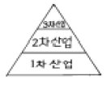
- 삼각형 → 장구형 → 사다리꼴 → 역삼각형
- 삼각형 → 사다리꼴 → 장구형 → 역삼각형
- 삼각형 → 사다리꼴 → 역삼각형 → 장구형
- 삼각형 → 장구형 → 역삼각형 → 사다리꼴
(정답률: 알수없음)
18. 계획이론을 절차적 이론(Procedual Planning theory)과 실체적이론(Substantive Planning theory)으로 나누어 볼 때, 다음 절차적 이론의 관심영역에 포함되지 않는 것은?
- 합리적 계획과정에 관한 이론
- 계획목표와 대안선택과의 관계에 대한 이론
- 도시경제의 구성요소와 분석에 관한 이론
- 계획집행의 평가에 관한 이론
(정답률: 알수없음)
19. 다음 중에서 광역도시권의 설정기준으로 적절하지 않는 것은?
- 지역인구 분포
- 역사적 전통
- 교육수준
- 하천, 산맥 등 자연적 요소
(정답률: 알수없음)
20. 도시내의 녹지체계를 설명한 것 중 이상적이고 실현 가능성 있는 녹지체계와 관련성이 가장 큰 것은?
- 방사형태 + 동심원 형태
- 동심원 형태 + 동서측의 연결
- 분산형태 + 중심부 통과 체계
- 도심중앙 통과의 대상형태 + 동서측 녹지대
(정답률: 알수없음)
2과목: 도시설계 및 단지계획
21. 주택단지계획에서 지역교통에 가장 우선적으로 고려해야할 사항은?
- 통과교통의 억제
- 주차장의 확보
- 화재방지
- 화물유통도로의 확보
(정답률: 알수없음)
22. 다음 중 재건축에 관한 내용으로 틀린 것은?
- 주택건설촉진법에 근거하여 시행된다.
- 건물소유자 혹은 조합이 사업주체이다.
- 지구지정이 필요하다.
- 사업시행 절차가 간소하다.
(정답률: 알수없음)
23. 건축물을 적당히 위요시켜 사회적 교류를 유도할 수 있는 다양한 공간을 조성할 수 있다. 위요감이 결핍될 때 느껴지는 감정을 적절히 표현한 것은?
- 높은 프라이버시감을 갖는다.
- 영역을 확정하기가 쉬워진다.
- 주민들간의 사회적 접촉 기회가 증가된다.
- 자신에 위치에 대한 공간적 이미지가 결여된다.
(정답률: 알수없음)
24. 그림과 같은 4개의 택지에 단독주택을 배치하였다. 우리나라(한국)의 4계절을 고려할 경우 그 중 어느 형태가 가장 적절한가?
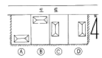
- A
- B
- C
- D
(정답률: 알수없음)
25. 다음 중 내용이 틀린 것은?
- 종단면도는 횡단면도를 통해 작성한다.
- 종단면도의 축척은 수직과 수평이 다른 경우가 많다.
- 횡단면도의 축척은 수직과 수평이 다를 수도 있다.
- 도로의 각 지점의 높이는 도로 종단면도에 표시된다.
(정답률: 알수없음)
26. 다음은 주구구성(住區構成)을 위한 기준설정의 단계별 계획단위의 형성이다. 이 중 불합리한 것은?
- 인보구는 주택 100 ‾ 200호로 구성하되 각기 50호 내외의 단위집단이 된다.
- 근린 분구는 1,000 ‾ 1,500호로 구성되고 있으나 경우에 따라서는 1,000호 미만의 소규모 분구도 배치 할 수가 있다.
- 근린주구는 10개 내외의 분구를 구성하고 있으므로 인구규모는 5만 ‾ 7.5만에 주구 면적은 10Km2내외로 정한다.
- 지구는 일생활권의 기본단위인 주구가 2 ‾ 4개가 모여 하나의 주택 집합군을 형성한다.
(정답률: 알수없음)
27. 전용주거지역 안에서 건축물을 건축하는 경우에는 건축물의 각부분을 정북방향으로의 인접대지 경계선으로부터 다음 범위안에서 건축조례가 정하는 거리 이상을 띄어 건축해야 한다. 그 기준으로 옳지 못한 것은?
- 높이 4m이하인 부분은 인접대지 경계선으로부터 1m 이상
- 높이 8m이하인 부분은 인접대지 경계선으로부터 2m 이상
- 높이 10m이하인 부분은 인접대지 경계선으로부터 2m 이상
- 높이 8m를 초과하는 부분은 인접대지경계선으로부터 당해 건축물의 각 부분의 높이의 1/2 이상
(정답률: 알수없음)
28. 아파트단지 내 건물배치에 있어서 일자(一字)배치는 장단 점을 모두 갖고 있다. 가장 큰 장점이라고 할 수 있는 항목은?
- 일조와 통풍에 유리하다.
- 도로 소음을 차단하는 효과가 있다.
- 용적률의 최대화를 꾀할 수 있다.
- 모든 가구가 같은 방향으로 배치되어 평등하다.
(정답률: 알수없음)
29. 단지계획의 가로망 구성에 있어서 가로의 폭원에 따라 가로를 대로, 중로, 소로로 구분할 경우, 중로에 속하지 않는 것은?
- 12 미터
- 15 미터
- 20 미터
- 25 미터
(정답률: 알수없음)
30. 토양의 공학적 분류에서 기준적인 표기가 틀린 것은?
- 유기질 실트 : OL
- 완전한 모래 : GM/GC
- 완전한 자갈 : GW/GP
- 실트와 점토가 섞인 모래 : SM/SC
(정답률: 알수없음)
31. 주택단지환경계획에 대한 설명 중 가장 관련이 없는 것은?
- 공동주거단지를 계획할 때 소음도 75dB정도가 가장 적당하다.
- 도로교통소음을 줄이기 위해 마운딩(Mounding)을 계획한다.
- 근린주구에는 초등학교를 계획한다.
- 근린분구에는 어린이 놀이터를 계획한다.
(정답률: 알수없음)
32. 다음 중 경관의 질적 요소를 계량화하여 경관평가의 객관화를 시도한 사람은?
- 하워드(E. Howard)
- 린치(K. Lynch)
- 레오폴드(Leopold)
- 샤플(Shafer)
(정답률: 알수없음)
33. 다음 중 단지 내 진입도로 계획시 고려사항으로서 맞지 않는 것은?
- 진입구를 단구간에 2개소 이상 설치하지 않는다.
- 진입도로는 집산도로 또는 국지도로에 연결하는 것을 원칙으로 한다.
- 모든 진입도로의 폭은 최소 4m이상을 확보하도록 규정하고 있다.
- 교통류 상호간의 교차각 중 60°이하의 교차각은 원칙적으로 피한다.
(정답률: 알수없음)
34. 도시인구 10만, 취업률 33%, 제조업 인구 구성비 10%인 도시가 있다. 제조업 인구 1인당 점유토지면적 100m2, 공공용지율 25%라고 할 때 공업지역 전체 면적은?
- 66ha
- 82.5ha
- 44ha
- 88ha
(정답률: 알수없음)
35. 우수배수(雨水排水) 시설을 오수배수(汚水排水) 시설과 분리 설치하는 이유가 아닌 것은?
- 오염 전파 방지
- 오수의 역류 방지
- 오수처리량 증가 방지
- 오수부하량 증가
(정답률: 알수없음)
36. 공업단지개발사업의 시행을 위한 해당 근거법(根據法)이 국토의계획및이용에관한법률보다 우선적인 특별법(特別法)으로 적용되는 사업은?
- 일단(一團)의 공업용지 조성사업
- 산업단지개발사업
- 공업단지조성사업
- 도심지재개발사업
(정답률: 알수없음)
37. 우리나라에서의 단독주택 단지 개발시 전체 면적 중에서 도로 등의 공공용지를 제외한 주택용지가 차지하는 비율은 다음 중 어느 것이 가장 적합한가?
- 45 ‾ 50%
- 51 ‾ 60%
- 61 ‾ 75%
- 76 ‾ 90%
(정답률: 알수없음)
38. 단독 주택단지 계획에서 도시계획 시설기준 상 국지도로의 배치간격에 가장 적합한 것은?
- 장측 : 50 ‾ 100m, 단측 : 15 ‾ 20m
- 장측 : 70 ‾ 120m, 단측 : 20 ‾ 30m
- 장측 : 90 ‾ 150m, 단측 : 25 ‾ 60m
- 장측 : 150 ‾ 200m, 단측 : 50 ‾ 80m
(정답률: 알수없음)
39. 다음 중 근린주구(Neighborhood Unit)와 관련이 없는 것은?
- 페리(C.A.Perry)
- 스타인(Clarence stein)
- 레드번(Radburn)
- 아딕스(Adickes)
(정답률: 알수없음)
40. 그 흐름이 완전하고 안전하며, 끊어짐이 없이 최적의 속도와 간격인 경우 교통의 1차선의 1시간 당 이론적인 수용력은 몇 대인가?
- 1,500대
- 1,600대
- 1,800대
- 2,000대
(정답률: 알수없음)
3과목: 도시개발론
41. 평판측량에서 두 점 사이의 경사거리를 L, 수평거리를 S, 경사분획을 n 이라고 할 때 수평거리를 나타내는 식은?
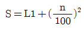
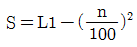
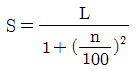
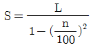
(정답률: 알수없음)
42. 삼각점의 선정시 주의하여야 할 사항으로 옳지 않은 것은?
- 견고한 지반에 설치하여 이동, 침하 등이 없도록 한다.
- 삼각점 상호간에 시준이 잘 되어야 한다.
- 삼각형은 가능한 정삼각형에 가깝도록 하는 것이 좋다.
- 가능한 측점 수를 많게 하여 후속 측량의 활용도를 높인다.
(정답률: 알수없음)
43. 평지에서 트랜싯으로부터 정확히 50m, 100m 떨어진 점에 표척을 세우고 협장 읽음 0.4⑤m, 0.812m를 얻었다. 이때 시거 정수 K와 C는 얼마인가 ? (단, 측정의 오차는 없는 것으로 한다)
- K = 122.65, C = 0.35
- K = 122.65, C = 0.45
- K = 122.85, C = 0.25
- K = 122.85, C = 0.35
(정답률: 알수없음)
44. P점의 표고를 결정하기 위하여 A, B, C수준점으로부터 수준측량을 한 결과 아래와 같은 측정치를 얻었다. P점 표고의 최확치는?
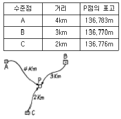
- 136.783m
- 136.776m
- 136.770m
- 136.763m
(정답률: 알수없음)
45. 평판측량을 한 결과 폐합오차가 허용범위내에 들어왔다면 폐합오차의 배분 방법은?
- 각의 크기에 비례하여 배분한다.
- 변의 길이의 역수에 비례하여 배분한다.
- 각 변에 균등하게 배분한다.
- 오차는 출발점으로부터 측점까지의 거리에 비례하여 배분한다.
(정답률: 알수없음)
46. 거리를 측정할 때에 발생하는 오차 중에서 정오차가 아닌것은?
- 온도의 변화에 의한 오차
- 눈금을 잘못 읽었을 때, 발생하는 오차
- 테이프의 눈금이 잘못되어 발생하는 오차
- 테이프의 처짐(sag)으로 발생하는 오차
(정답률: 알수없음)
47. 평판측량에 의해 축척 1/1000의 도면을 작성할 때 중심맞추기 오차(편심 거리)는 어느 정도까지 허용할 수 있는가? (단, 도상에서 허용제도오차는 0.2mm로 함)
- 5cm 이내
- 10cm 이내
- 20cm 이내
- 50cm 이내
(정답률: 알수없음)
48. 100m2 정사각형 토지의 면적을 0.2m2까지 정확하게 구하기 위해서는 한변의 길이를 최대 몇 cm까지 구해야 하는가?
- 0.5cm
- 1.0cm
- 1.5cm
- 2.0cm
(정답률: 알수없음)
49. 우리나라 1:25,000 지형도의 주곡선의 간격은 얼마인가?
- 50m
- 20m
- 10m
- 5m
(정답률: 알수없음)
50. 실제 31°46'08″인 각을 1분까지 읽을 수 있는 트랜싯을 써서 6회의 반복법으로 관측했을 때의 결과각은? (단, 기계 및 관측오차는 없는 것으로 가정한다.)
- 31°46′48″
- 31°46′04″
- 31°46′20″
- 31°46′10″
(정답률: 알수없음)
51. 다음의 내용 중 올바르지 않은 것은?
- 방향각은 자오선 북방향에서 우회로 측정한 각이다.
- 삼각점의 위치는 경위도 또는 평면직각 좌표로 나타낸다.
- 우리나라 표고는 인천만의 평균해수면으로부터의 높이이다.
- 구면거리는 항상 평면거리보다 길다.
(정답률: 알수없음)
52. 지형도에 의한 지형의 표시방법에 속하지 않는 것은?
- 음영법
- 등고선법
- 좌표점법
- 점고법
(정답률: 알수없음)
53. 그림과 같이 교호 수준측량을 실시하여 B점의 표고를 구한 값은?
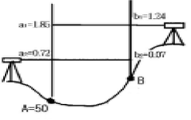
- 49.39m
- 50.65m
- 51.26m
- 50.63m
(정답률: 알수없음)
54. 삼각측량에서 인접한 변의 길이가 32km, 28km이고 사이각이 42°50' 20" 일 때 구과량은? (단, 지구 곡률반경은 6370km)
- 1.3"
- 1.5"
- 1.7"
- 1.9"
(정답률: 알수없음)
55. 삼각측량에 있어서 삼각점의 수평위치를 결정하는 요소는 무엇인가?
- 거리와 방향각
- 고저차와 방향각
- 밀도와 폐합비
- 폐합오차와 밀도
(정답률: 알수없음)
56. 기선 D=20m, 수평각 α=80°, β=70°, 연직각 V=40°를 측정하였다. 기점 P의 높이 H는? (단, A, B, C점은 동일 평면인 지상에 있고 P점은 목표점이다.)
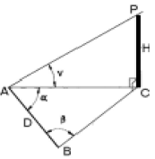
- 31.54m
- 32.42m
- 32.63m
- 33.56m
(정답률: 알수없음)
57. 거리측량에서 정밀도가 ±(5㎜＋3㎜/㎞)인 전파거리측량기 (EDM)로 3.8㎞의 거리를 측정할 때 예측되는 총오차는?
- ±10.25㎜
- ±12.45㎜
- ±14.75㎜
- ±16.40㎜
(정답률: 알수없음)
58. 조정이 복잡하고 포괄면적이 적으며 시간과 비용이 많이 요하는 것이 결점이나 정도가 가장 높은 삼각망은?
- 단열 삼각망
- 유심 삼각망
- 사변형 삼각망
- 결합 삼각망
(정답률: 알수없음)
59. 축척과 도면 크기, 면적의 관계에 대한 설명으로 옳은 것은?
- 축척 1/500 도면의 면적은 실제 면적의 1/1,000이다.
- 축척 1/600 도면을 1/200으로 확대 했을 때 도면의 크기는 3배가 된다.
- 축척 1/300 도면의 면적은 실제면적의 1/9,000이다.
- 축척 1/500인 도면을 축척 1/1,000으로 축소 했을 때 도면의 크기는 1/4이 된다.
(정답률: 알수없음)
60. 노선거리 16km인 두점간의 수준차를 직접 수준측량에 의해 측량한 표준오차가 ±20mm이라면 1km 당 표준오차는?
- 0.625mm
- 1.25mm
- 2.50mm
- 5.00mm
(정답률: 알수없음)
4과목: 국토 및 지역계획
61. 우리나라 국토개발의 목적에 해당되지 않는 것은?
- 조세 수입의 확보
- 도시, 농촌의 관계 개선
- 산업, 인구의 적정 배치
- 천연자원의 이용 개발
(정답률: 알수없음)
62. 성장거점이론의 토대가 되는 페로(F. Perroux)의 성장극 이론에서 제시된 성장극(growth pole)의 특성이 아닌것은?
- 성장극은 자체의 성장을 유도하고 성장을 다른 곳으로 확산시킨다.
- 성장극은 경제적 지배력을 가질 수 있을 만큼 충분히 큰 규모를 갖는다.
- 성장극은 다른 산업과의 연계에 있어서 독립성이 강한 특징이 있다.
- 성장극은 전체산업의 평균성장률보다 빠른 성장속도를 갖는다.
(정답률: 알수없음)
63. 일정지역의 일정기간 성장된 경제변화에 영향을 준 요인들의 기여량을 찾아내는 지역경제 분석방법은?
- 경제기반분석
- 지역산업연관분석
- 사분위편차
- 지역변화할당분석
(정답률: 알수없음)
64. 개발제한구역(開發制限區域)의 지정 목적으로서 옳지 않은 것은?
- 도시주변 산림보호와 상수원의 확보
- 생산적 농경지의 보전
- 도시의 무질서한 평면적 확산 방지
- 도시와 농촌간의 특성 있는 개발
(정답률: 알수없음)
65. 다음 중 성장거점전략에 의해 조성된 도시로 볼 수 없는 것은?
- 창원
- 과천
- 안산
- 광양
(정답률: 알수없음)
66. 다음의 지역문제 해결책 중 그 성격이 다른 것은?
- 산업이전법(영국)
- 공업배치법(영국)
- 특수지역개발촉진법(영국)
- 테네시강 종합개발계획(미국)
(정답률: 알수없음)
67. 알프레드 베버(A.Weber)의 공업입지이론에서 공장의 입지 인자로서 고려되지 않는 것은?
- 운송비
- 노동비
- 집적이익
- 시설비
(정답률: 알수없음)
68. 다음 중 독일의 도시계획관련 제도로 가장 적당한 것은?
- ZAC
- Structure Plan 과 Local Plan
- F-plan 과 B-plan
- PUD
(정답률: 알수없음)
69. 다음의 자료를 바탕으로 i 지역 j 산업에 대한 입지계수(Location Quotient: L.Q)를 구하면 얼마인가?(단, i 지역 j 산업의 고용자수 : 4,000명, i 지역의 총고용자수 : 60,000명, j 산업의 전국 고용자수 : 250,000명, 전국 총 고용자수 : 7,500,000명)
- 0.07
- 0.50
- 0.67
- 2.00
(정답률: 알수없음)
70. 현재 당면하고 있는 왜곡된 지역산업구조를 개선하기 위한 방안으로 적당하지 않은 것은?
- 대기업위주의 전략산업 육성
- 지방산업의 입지 여건 개선
- 산업구조 고도화 추진
- 부가가치의 역내환류 촉진
(정답률: 알수없음)
71. 결절지역(Nodal Region)내 중심 지점의 크기와 그 지점간의 거리에 대한 관계를 언급한 레일리 (W.J.Reilly)의 법칙을 올바르게 표현한 것은?
- 두 중심 지점간의 흐름은 그 중심 지점의 크기 및 그 지점간의 거리의 제곱에 정비례 한다.
- 두 중심 지점간의 흐름은 그 중심 지점의 크기에 정비례하고 그 지점간의 거리의 제곱에 반비례한다.
- 두 중심 지점간의 흐름은 그 중심 지점의 크기에 반비례하고 그 지점간의 거리의 제곱에 정비례한다.
- 두 중심 지점간의 흐름은 그 중심 지점의 크기 및 그 지점간의 거리의 제곱에 반비례한다.
(정답률: 알수없음)
72. 지역계획의 핵심적 영역의 변화를 과거부터 현재·미래에 이르기까지 역사적으로 바르게 연결한 것은?
- 도시 및 대도시권계획 - 자연자원계획 - 환경계획
- 자연자원계획 - 도시 및 대도시권계획 - 환경계획
- 도시 및 대도시권계획 - 환경계획 - 자연자원계획
- 환경계획 - 도시 및 대도시권계획 - 자연자원계획
(정답률: 알수없음)
73. 현행 수도권정비계획에 의한 권역구분에 해당되지 않는 것은?
- 성장관리권역
- 과밀억제권역
- 자연보전권역
- 이전촉진권역
(정답률: 알수없음)
74. 다음 중 지니 집중계수에 관한 설명 중 가장 거리가 먼것은?
- 지니 집중계수는 원래 소득분포의 불평등도를 측정하기 위하여 고안된 것이다.
- 현실의 소득분포곡선은 완전평등분포선에서 이탈하여 아래쪽으로 활처럼 굽는다.
- 완전평등분포선과 현실의 소득분포곡선으로 둘러싸인 면적이 크면 클수록 소득분포의 불평등은 커진다.
- 로렌츠 곡선에서는 불평등면적의 절대값을 가지고 소득 분포의 불평등을 측정한다.
(정답률: 알수없음)
75. 제 3 세계의 도시화를 설명하는 용어로서 관련이 가장적은 것은?
- 가도시화
- 종주도시화
- 과잉도시화
- 산업도시화
(정답률: 알수없음)
76. 경제발전(X축)과 지역간 격차(Y축)의 상관관계를 올바르게 나타낸 것은?
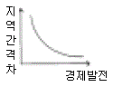
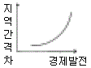
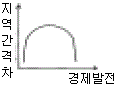
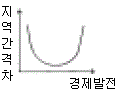
(정답률: 알수없음)
77. 다음의 여러 분석 및 계획기법 가운데 국토및지역계획에서 잘 이용하지 않는 것은?
- 선형계획기법
- 경제기반연구
- 재고관리법
- 편익-비용분석법
(정답률: 알수없음)
78. 다음 국가도시개발전략 중 집중효과를 초래하는 전략에 해당되는 것은?
- 거점 개발(growth centers)
- 지역 대도시개발(regional metropolis)
- 중소 도시개발(secondary cities)
- 자유 방임(laissez-faire)
(정답률: 알수없음)
79. 국토기본법상의 국토조사에 관한 설명으로 부적절한 것은?
- 국토에 관한 계획 또는 정책의 수립, 국토정보체계의 구축 등을 위하여 실시한다.
- 건설교통부장관이 국토조사를 실시하되 중앙행정기관의 장 또는 자방자치단체의 장에게 조사에 필요한 자료의 제출을 요청할 수 있다.
- 필요한 경우에는 조사를 전문기관에 의뢰할 수 있다.
- 정기조사는 5년 단위로 실시한다.
(정답률: 알수없음)
80. 공업입지가 지역의 중심지 일원에 집중되는 성향을 촉진시키는 인자에 해당되지 않는 것은?
- 높은 쇄신(innovation)
- 집적경제의 효과
- 양호한 교통시설
- 생태환경의 가치
(정답률: 알수없음)
5과목: 도시계획관계법규
81. 국토의 계획 및 이용에 관한 법률에서 개발행위허가를 받지 않아도 되는 경미한 행위가 아닌 것은?
- 공작물의 설치: 도시지역에서 무게 50t이하, 부피 50m3이하, 수평투영면적이 25m2이하
- 토지의 형질변경: 높이 50㎝이내 또는 깊이 50㎝이내의 절토, 성토, 정지
- 토석 채취: 지구단위계획구역에서 면적 50m2이하인 토지에서 부피 50m3이하
- 물건을 쌓아 놓은 행위: 녹지지역에 쌓아 놓은 면적이 25m2이하인 토지에 전체 무게 50t이하, 전체 부피 50m3이하
(정답률: 알수없음)
82. 택지개발사업에 의하여 조성된 택지의 공급에 관한 설명중 틀린 것은?
- 택지를 공급하고자 하는 자는 건설교통부장관의 승인을 얻어야 한다.
- 주택법의 규정에 의한 국민주택의 건설용지로 사용할 택지의 공급에 있어서 그 가격을 조성원가이하로 할 수있다.
- 택지를 공급받은 자는 택지공급 승인을 얻은 용도에 따라 주택등을 건설하여야 한다.
- 시행자는 공급하고자 하는 택지를 공급받을 자로부터 그 대금의 택지의 2분의 1 미만을 미리 받을 수 있다.
(정답률: 알수없음)
83. 택지개발촉진법 시행령의 주거생활의 편익을 위하여 이용되는 시설로서 건설교통부령이 정하는 시설이 아닌 것은?
- 운동시설
- 우체국
- 일반목욕장
- 공용시장
(정답률: 알수없음)
84. 다음의 각 용도지역들 가운데서 일정한 대지면적을 가지고 가장 층수가 많은 건물을 지을 수 있는 지역은?
- 자연녹지지역
- 제3종 일반주거지역
- 일반상업지역
- 제1종 전용주거지역
(정답률: 알수없음)
85. 다음의 재원 조달 방법 중에서 환지방식의 도시개발사업에만 적용되는 것은?
- 국고보조
- 도비보조
- 수익자 부담
- 체비지 매각
(정답률: 알수없음)
86. 시가화조정구역에 관한 설명 중 틀린 것은?
- 도시의 계획적, 단계적 개발을 도모한다.
- 시가지 안의 인구의 동태, 산업발전 상황 등을 고려하여 도시관리계획으로 시가화유보기간을 정하여야 한다.
- 시가화 유보기간은 20년으로 법정되어 있다.
- 시가화조정구역지정의 실효고시는 실효일자 및 실효사유와 실효된 도시관리계획의 내용을 관보에 게재한다.
(정답률: 알수없음)
87. 도시재개발사업을 토지 등의 소유자로 하여금 시행할 수 있도록 인가하였을 때 관계서류의 공람기간은?
- 7일
- 14일
- 15일
- 30일
(정답률: 알수없음)
88. 다음은 관광단지 조성사업의 시행 시 사업시행자가 수용 또는 사용할 수 있는 물건 및 권리들 중 옳지 않은 것은?
- 토지에 관한 소유권외의 권리
- 물의 사용에 관한 권리
- 토지에 정착한 입목·건물 기타 물건 및 이에 관한 소유권의 권리
- 토지에 속한 토석 또는 모래와 조약돌
(정답률: 알수없음)
89. 다음 중 수도권정비계획과 관련한 내용이 잘못 기술된 것은?
- 건설교통부장관은 수도권의 인구 및 산업의 집중억제와 적정배치를 위하여 수도권정비계획을 입안한다.
- 건설교통부장관은 수도권정비계획안을 수도권정비위원회의 심의를 거친 후 국무회의의 심의와 대통령의 승인을 얻어 결정한다.
- 수도권을 과밀억제권역, 성장관리권역, 자연보전권역의 3개권역으로 구분한다.
- 수도권정비계획은 국토이용관리법의 내용에 적합하게 수립되어야 한다.
(정답률: 알수없음)
90. 재개발사업에서 공동구의 관리는 누가 하는가?
- 시장 또는 군수
- 전력 및 통신회사
- 분양대상자
- 건설교통부장관
(정답률: 알수없음)
91. 공익사업을통한토지등의취득및보상에관한법률상 토지 관계인에 포함되지 않는 권리는?
- 지상권(地上權)
- 지역권(地役權)
- 전세권(傳貰權)
- 지하권(地下權)
(정답률: 알수없음)
92. 다음 중 국토기본법에 의한 지역계획의 범주에 속하는 것은?
- 수도권발전계획
- 광역권지역 개발계획
- 특정용도지역 개발계획
- 개발촉진지구 개발계획
(정답률: 알수없음)
93. 다음 중 주택법에 관한 내용이 아닌 것은?
- 투기과열지구의 지정 및 전매행위 등의 제한
- 공동주택 리모델링에 따른 특례
- 최저주거기준 미달가구에 대한 우선 지원
- 협의양도인 택지
(정답률: 알수없음)
94. 체육시설업 부지면적의 제한사항으로 적절하지 않은 것은?
- 18홀 이상의 골프장 : 108만m2를 초과하지 못함
- 자동차경주장업 : 트랙면적과 안전지대를 합한 면적의 6배를 초과 못함
- 썰매장업 : 슬로프면적의 3배를 초과 못함
- 스키장업 : 전체 슬로프길이(m) × 50m × 3
(정답률: 알수없음)
95. 도시계획시설 중 유원지의 유희시설은 어린이용 위주의 유희시설과 가족용 위주의 유희시설로 구분하여 설치하여야 하는데 동물원 및 식물원은 어디에 해당하는가?
- 유희시설
- 휴양시설
- 위락시설
- 특수시설
(정답률: 알수없음)
96. 도시 및 주거환경정비법의 대통령령이 정하는 정비계획의 경미한 사항을 변경하는 경우에 해당되지 않는 것은?
- 정비구역면적의 10퍼센트 미만의 변경인 경우
- 공동이용시설 설치계획의 변경인 경우
- 건축물의 건폐율·용적률·최고높이 또는 최고층수를 축소하는 경우
- 정비사업 시행예정시기를 3년의 범위안에서 조정하는 경우
(정답률: 알수없음)
97. 단지조성사업등에 관하여 환경·교통·재해등에관한영향평가법에 의한 교통영향 평가를 받지 아니하여도 되는 노외주차장의 규모는?
- 당해 사업부지 면적의 0.3% 이상
- 당해 사업부지 면적의 0.6% 이상
- 당해 사업부지 면적의 1.2% 이상
- 당해 사업부지 면적의 2.0% 이상
(정답률: 알수없음)
98. 수도권정비계획법에 관한 다음 내용 중 틀린 것은?
- 수도권안에서 건설부장관이 대규모개발사업을 시행하고자할 경우에는 수도권정비 위원회의 심의를 거칠 필요가 없다.
- 인구집중유발시설인 공장에 대한 총량규제의 내용은 수도권정비위원회의 심의를 거쳐 결정한다.
- 인구집중유발시설인 학교에 대한 총량규제의 내용은 대통령령으로 정한다.
- 수도권안에서 대규모개발사업을 시행하는 경우 광역적 기반시설의 설치 비용은 수도권정비위원회의 심의를 거쳐 시행하는 자에게 이를 부담시킬 수 있다.
(정답률: 알수없음)
99. 시설면적 15,000m2의 제1종근린생활시설의 경우 최소 부설주차장의 설치기준은?
- 40대
- 75대
- 150대
- 200대
(정답률: 알수없음)
100. 도시공원법 및 국토의계획및이용에관한법률상 녹지에 대한 설명으로 틀린 것은?
- 각종 사고나 자연재해 등 방지를 위하여 설치하는 녹지를 방재녹지라 한다.
- 대기오염, 소음 진동, 악취 등의 공해를 방지하기 위하여 설치하는 녹지를 완충녹지라 한다.
- 도시의 자연적 환경을 보전하거나 개선하기 위하여 설치하는 녹지를 경관녹지라 한다.
- 녹지는 국토의계획및이용에관한법률상 도시기반시설에 포함된다.
(정답률: 알수없음)